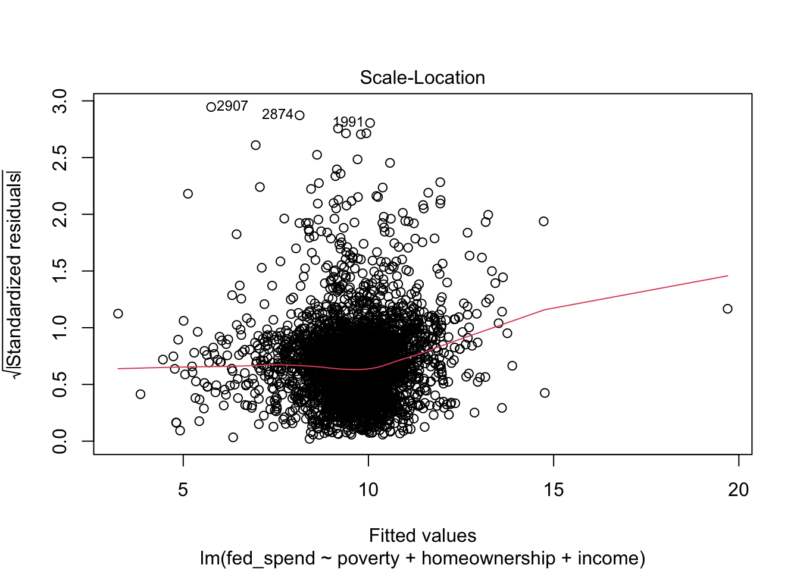
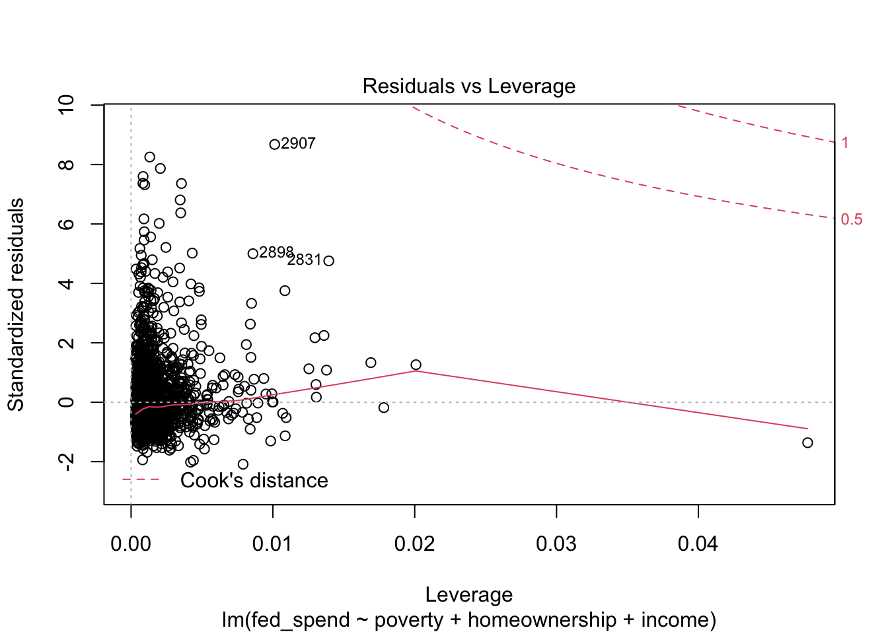

26 R Regression Diagnostics
26.1 Learning Outcomes
In this chapter, you will learn how to:
- Produce residual vs. fitted (RVFP) and residual vs. leverage plots (RVLP)
- Check for multicollinearity using variance inflation factor (VIF)
- Exclude observations from a regression model
26.2 Set-up
To complete this chapter, you need to
- Open a script
- Load the following packages
We will use the States dataset within the carData package. Be sure to view the documentation for these data in the Help tab of the bottom-right pane by typing the name of the dataset in the search bar.
26.3 RVF and RVL
Producing RVF and RVL plots is very easy. In Chapter 14, the following regression was run.
murder_mod <- lm(murder ~ pctmetro + pcths + poverty, data = statecrime1997)
get_regression_table(murder_mod)| term | estimate | std_error | statistic | p_value | lower_ci | upper_ci |
|---|---|---|---|---|---|---|
| intercept | -81.538 | 27.317 | -2.985 | 0.004 | -136.493 | -26.583 |
| pctmetro | 0.180 | 0.051 | 3.541 | 0.001 | 0.078 | 0.282 |
| pcths | 0.657 | 0.298 | 2.203 | 0.032 | 0.057 | 1.256 |
| poverty | 1.971 | 0.364 | 5.413 | 0.000 | 1.238 | 2.703 |
Once we have our regression results saved to an object, all we need to do is use the plot function, as shown in the code below. The plot function produces four plots. The first plot is the RVFP and the fourth plot is the RVLP. You do not need to concern yourself with the second and third plots.

In both plots, we see that observation 51 (D.C.) is particularly problematic.
Exercise 1: Using the States data, run a regression model where either SATV or SATM is the outcome. Once you have the model, produce the RVFP and RVLP. Do any observations appear problematic?
26.4 VIF
VIF is a common way to check for excessive multicollinearity. There is no strict rule for identifying multicollinearity, but a VIF between 5 and 10 signals a potential problem. To obtain the VIF, we can use the vif function from the car package like so.
## pctmetro pcths poverty
## 1.0091 2.2515 2.2598None of the VIF values for the explanatory variables come close to 5. Therefore, we can be confident that multicollinearity is not an issue.
Exercise 2: Obtain VIF values for your regression model. Might multicollinearity be a concern?
26.5 Exclude observations
We should be judicious and transparent when deciding to exclude observations from an analysis. When in doubt, do not exclude observations. If we decide an exclusion is defensible, then we can exclude observations directly within the lm function to avoid the need to create a new dataset. In the code below, I exclude observation 51 from the regression model.
Now I have different results that are more representative of state murder rates.
| term | estimate | std_error | statistic | p_value | lower_ci | upper_ci |
|---|---|---|---|---|---|---|
| intercept | -81.538 | 27.317 | -2.985 | 0.004 | -136.493 | -26.583 |
| pctmetro | 0.180 | 0.051 | 3.541 | 0.001 | 0.078 | 0.282 |
| pcths | 0.657 | 0.298 | 2.203 | 0.032 | 0.057 | 1.256 |
| poverty | 1.971 | 0.364 | 5.413 | 0.000 | 1.238 | 2.703 |
Exercise 3: Exclude one or more observations from your regression model.
26.6 Submit
Please save your script using your last name and submit to eLC. Once you submit, answers will become available for download.